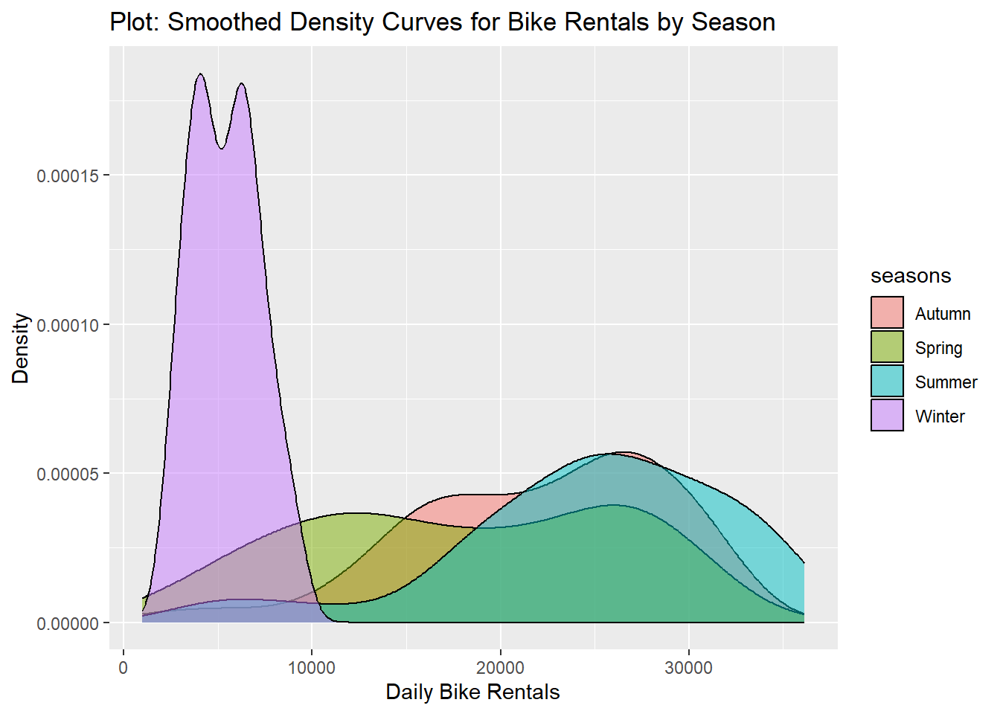
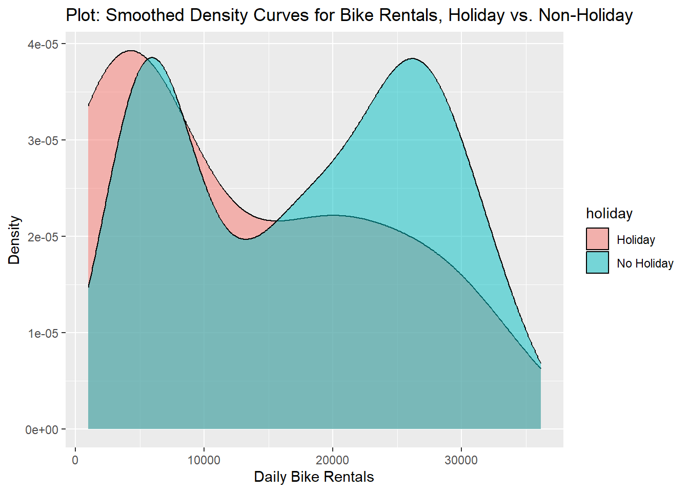
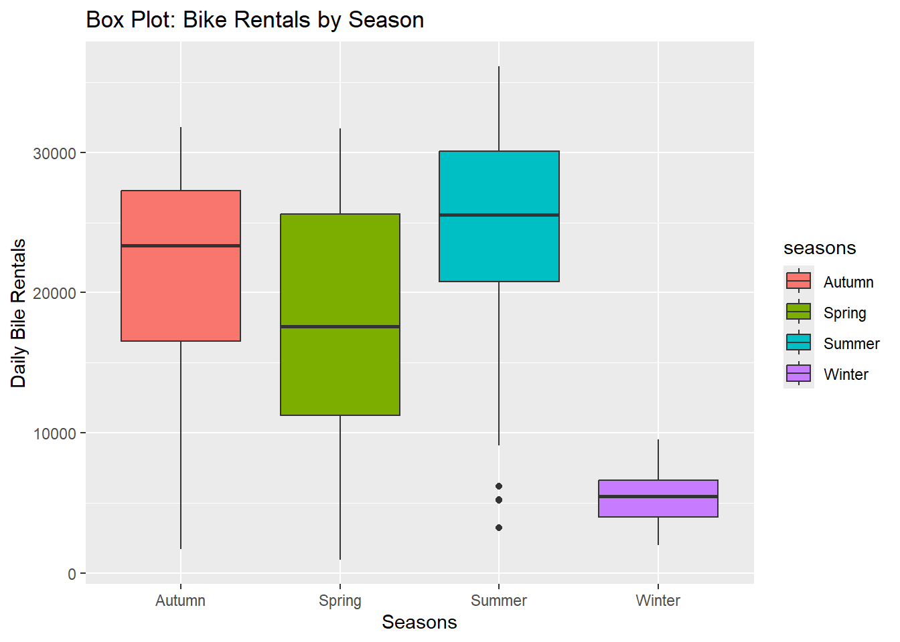
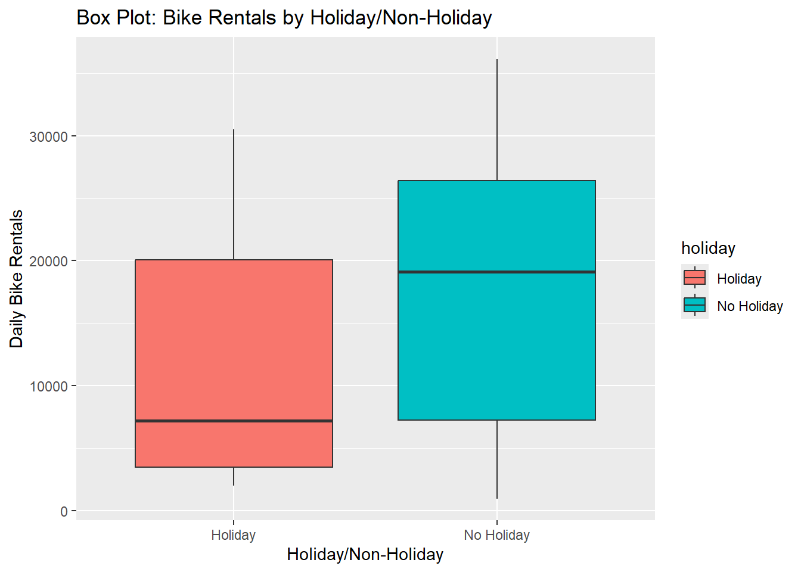
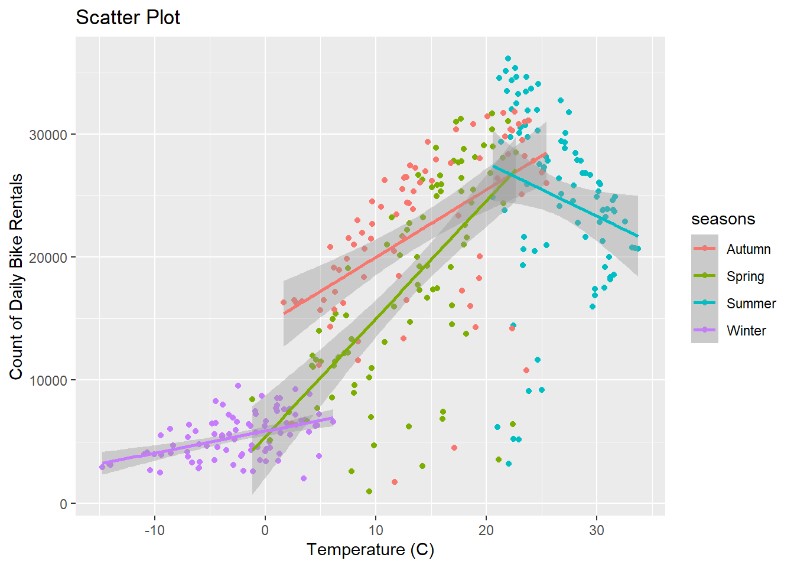
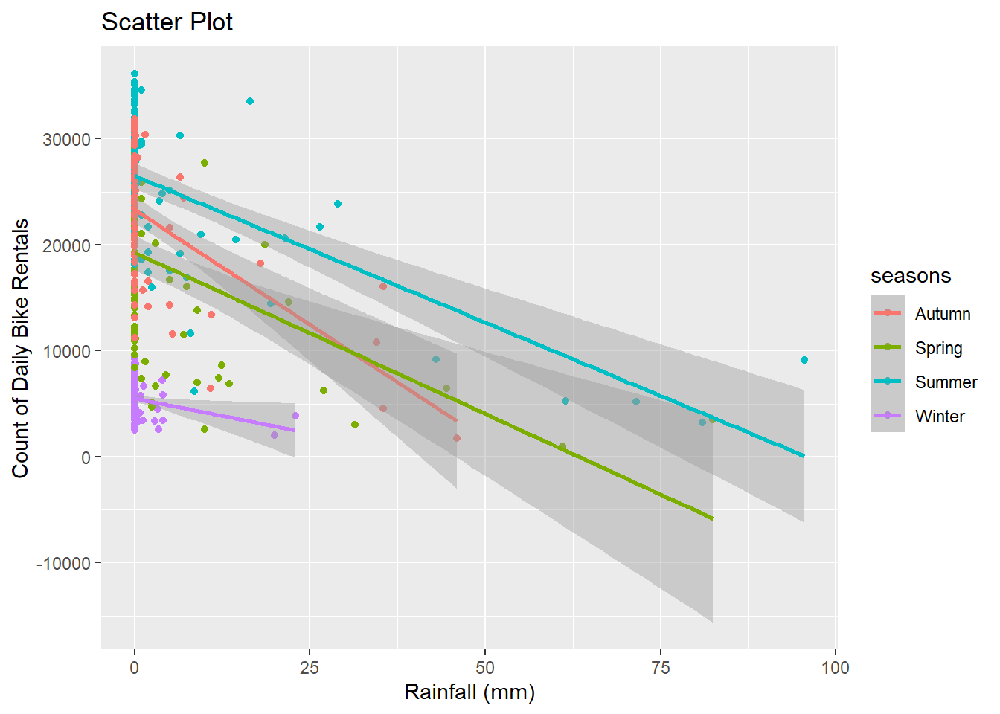

The Seoul Bike Sharing Demand data set contains information about hourly bike rentals in the Seoul Bike Sharing System for the year from 12/01/2017 to 11/30/2017. The data set also contains corresponding weather, date, time, season, and holiday information. The data is housed at the IC Irvine Machine Learning Repository. See more information about the data here: https://archive.ics.uci.edu/dataset/560/seoul+bike+sharing+demand
The purpose of this analysis is to explore the data and fit a multiple Linear Regressions (MLR) model.
Load packages for analysis:
library(tidyverse)
── Attaching core tidyverse packages ──────────────────────── tidyverse 2.0.0 ──
✔ dplyr 1.1.4 ✔ readr 2.1.5
✔ forcats 1.0.0 ✔ stringr 1.5.1
✔ ggplot2 3.5.2 ✔ tibble 3.3.0
✔ lubridate 1.9.4 ✔ tidyr 1.3.1
✔ purrr 1.0.4
── Conflicts ────────────────────────────────────────── tidyverse_conflicts() ──
✖ dplyr::filter() masks stats::filter()
✖ dplyr::lag() masks stats::lag()
ℹ Use the conflicted package (<http://conflicted.r-lib.org/>) to force all conflicts to become errors
library(lubridate)library(tidymodels)
Warning: package 'tidymodels' was built under R version 4.5.2
Rows: 8760 Columns: 14
── Column specification ────────────────────────────────────────────────────────
Delimiter: ","
chr (4): Date, Seasons, Holiday, Functioning Day
dbl (10): Rented Bike Count, Hour, Temperature(°C), Humidity(%), Wind speed ...
ℹ Use `spec()` to retrieve the full column specification for this data.
ℹ Specify the column types or set `show_col_types = FALSE` to quiet this message.
Check columns for data type and reasonable values:
summary(bike_data)
Date Rented Bike Count Hour Temperature(°C)
Length:8760 Min. : 0.0 Min. : 0.00 Min. :-17.80
Class :character 1st Qu.: 191.0 1st Qu.: 5.75 1st Qu.: 3.50
Mode :character Median : 504.5 Median :11.50 Median : 13.70
Mean : 704.6 Mean :11.50 Mean : 12.88
3rd Qu.:1065.2 3rd Qu.:17.25 3rd Qu.: 22.50
Max. :3556.0 Max. :23.00 Max. : 39.40
Humidity(%) Wind speed (m/s) Visibility (10m) Dew point temperature(°C)
Min. : 0.00 Min. :0.000 Min. : 27 Min. :-30.600
1st Qu.:42.00 1st Qu.:0.900 1st Qu.: 940 1st Qu.: -4.700
Median :57.00 Median :1.500 Median :1698 Median : 5.100
Mean :58.23 Mean :1.725 Mean :1437 Mean : 4.074
3rd Qu.:74.00 3rd Qu.:2.300 3rd Qu.:2000 3rd Qu.: 14.800
Max. :98.00 Max. :7.400 Max. :2000 Max. : 27.200
Solar Radiation (MJ/m2) Rainfall(mm) Snowfall (cm) Seasons
Min. :0.0000 Min. : 0.0000 Min. :0.00000 Length:8760
1st Qu.:0.0000 1st Qu.: 0.0000 1st Qu.:0.00000 Class :character
Median :0.0100 Median : 0.0000 Median :0.00000 Mode :character
Mean :0.5691 Mean : 0.1487 Mean :0.07507
3rd Qu.:0.9300 3rd Qu.: 0.0000 3rd Qu.:0.00000
Max. :3.5200 Max. :35.0000 Max. :8.80000
Holiday Functioning Day
Length:8760 Length:8760
Class :character Class :character
Mode :character Mode :character
The date, seasons, holiday, and functioning day variables are all formatted as character data. The rest of the values are numeric, and the basic summary statistics seem reasonable for the numeric variables.
Rename variables:
Rename the variables to make them easier to work with.
Check columns for data type and reasonable values again after transfroming data:
summary(bike_data)
date bike_count hour temp
Min. :2017-12-01 Min. : 0.0 Min. : 0.00 Min. :-17.80
1st Qu.:2018-03-02 1st Qu.: 191.0 1st Qu.: 5.75 1st Qu.: 3.50
Median :2018-06-01 Median : 504.5 Median :11.50 Median : 13.70
Mean :2018-06-01 Mean : 704.6 Mean :11.50 Mean : 12.88
3rd Qu.:2018-08-31 3rd Qu.:1065.2 3rd Qu.:17.25 3rd Qu.: 22.50
Max. :2018-11-30 Max. :3556.0 Max. :23.00 Max. : 39.40
hum wind_speed vis dew_pt
Min. : 0.00 Min. :0.000 Min. : 27 Min. :-30.600
1st Qu.:42.00 1st Qu.:0.900 1st Qu.: 940 1st Qu.: -4.700
Median :57.00 Median :1.500 Median :1698 Median : 5.100
Mean :58.23 Mean :1.725 Mean :1437 Mean : 4.074
3rd Qu.:74.00 3rd Qu.:2.300 3rd Qu.:2000 3rd Qu.: 14.800
Max. :98.00 Max. :7.400 Max. :2000 Max. : 27.200
sol_rad rainfall snowfall seasons
Min. :0.0000 Min. : 0.0000 Min. :0.00000 Autumn:2184
1st Qu.:0.0000 1st Qu.: 0.0000 1st Qu.:0.00000 Spring:2208
Median :0.0100 Median : 0.0000 Median :0.00000 Summer:2208
Mean :0.5691 Mean : 0.1487 Mean :0.07507 Winter:2160
3rd Qu.:0.9300 3rd Qu.: 0.0000 3rd Qu.:0.00000
Max. :3.5200 Max. :35.0000 Max. :8.80000
holiday func_day
Holiday : 432 No : 295
No Holiday:8328 Yes:8465
Numeric variables already checked out and have not changed, but now we can see that the data column (as date data) and the seasons, holiday, and functional day columns (as factors) also look reasonable.
Create summary statistics:
Focus on summary statistics for hourly bike rental data (bike_count).
#overall summary of hourly bike rental countsbike_data |>summarize ("min"=min(bike_count), "mean"=mean(bike_count), "median"=median(bike_count), "max"=max(bike_count), "sd"=sd(bike_count))
# A tibble: 1 × 5
min mean median max sd
<dbl> <dbl> <dbl> <dbl> <dbl>
1 0 705. 504. 3556 645.
The median hourly bike rental count is less than the mean, indicating a right-skewed data set. The standard deviation is between the median and the mean in value, which seems like a lot of variability.
#grouped by seasonsbike_data |>group_by(seasons) |>summarize ("min"=min(bike_count), "mean"=mean(bike_count), "median"=median(bike_count), "max"=max(bike_count), "sd"=sd(bike_count))
# A tibble: 4 × 6
seasons min mean median max sd
<fct> <dbl> <dbl> <dbl> <dbl> <dbl>
1 Autumn 0 820. 764. 3298 651.
2 Spring 0 730. 583 3251 622.
3 Summer 9 1034. 906. 3556 690.
4 Winter 3 226. 203 937 150.
Summer had the highest mean, median, and max hourly bike rentals, while winter has the lowest.
#grouped by holiday or notbike_data |>group_by(holiday) |>summarize ("min"=min(bike_count), "mean"=mean(bike_count), "median"=median(bike_count), "max"=max(bike_count), "sd"=sd(bike_count))
# A tibble: 2 × 6
holiday min mean median max sd
<fct> <dbl> <dbl> <dbl> <dbl> <dbl>
1 Holiday 0 500. 240 2400 571.
2 No Holiday 0 715. 524. 3556 647.
Values are higher for non-holidays.
#grouped by functioning day or notbike_data |>group_by(func_day) |>summarize ("min"=min(bike_count), "mean"=mean(bike_count), "median"=median(bike_count), "max"=max(bike_count), "sd"=sd(bike_count))
# A tibble: 2 × 6
func_day min mean median max sd
<fct> <dbl> <dbl> <dbl> <dbl> <dbl>
1 No 0 0 0 0 0
2 Yes 2 729. 542 3556 642.
We see that there were no bike rentals recorded for non-functional days, so we will drop these values from the data set. That whole group is basically “NA.” The bike sharing system seems to have been closed or otherwise unavailable.
Re-create previous summaries without non-functional days, and add correlation:
#overall summary of hourly bike rental countsbike_data |>filter(func_day =="Yes") |>summarize ("min"=min(bike_count), "mean"=mean(bike_count), "median"=median(bike_count), "max"=max(bike_count), "sd"=sd(bike_count))
# A tibble: 1 × 5
min mean median max sd
<dbl> <dbl> <dbl> <dbl> <dbl>
1 2 729. 542 3556 642.
The minimum, mean, and median all shifted up a bit without the non-functional days, and the standard deviation decreased a bit. Overall the results are similar.
Focusing on the first set of correlation coefficients (between hourly bike rentals (bike_count) and the other numeric variables), we don’t see strong correlations, but the strongest are with temperature (0.56), hour (0.43) and dew point (0.40).
Simplify Dataset from Hourly to Daily
For the purpose of this analysis, we will simplify the hourly bike rental data set into a daily bike rental data set. Variables will be averaged or summed across the day or just carried over, as appropriate for each variable. Non-functional days are dropped.
`summarise()` has grouped output by 'date', 'seasons'. You can override using
the `.groups` argument.
head(daily_bike_data) #take a look
# A tibble: 6 × 12
date seasons holiday bike_count rainfall snowfall temp hum
<date> <fct> <fct> <dbl> <dbl> <dbl> <dbl> <dbl>
1 2017-12-01 Winter No Holiday 9539 0 0 -2.45 45.9
2 2017-12-02 Winter No Holiday 8523 0 0 1.32 62.0
3 2017-12-03 Winter No Holiday 7222 4 0 4.88 81.5
4 2017-12-04 Winter No Holiday 8729 0.1 0 -0.304 52.5
5 2017-12-05 Winter No Holiday 8307 0 0 -4.46 36.4
6 2017-12-06 Winter No Holiday 6669 1.3 8.6 0.0458 70.8
# ℹ 4 more variables: wind_speed <dbl>, vis <dbl>, dew_pt <dbl>, sol_rad <dbl>
Create Summary Statistics and Plots for Daily Data Set
Focus on daily bike counts.
#overall summary of daily bike rentalsdaily_bike_data |>summarize ("min"=min(bike_count), "mean"=mean(bike_count), "median"=median(bike_count), "max"=max(bike_count), "sd"=sd(bike_count))
# A tibble: 1 × 5
min mean median max sd
<dbl> <dbl> <dbl> <dbl> <dbl>
1 977 17485. 18563 36149 9937.
Unlike the hourly summaries, the daily bike rental mean is lower than the median and the standard deviation is about half the median/mean value.
#grouped by seasonsdaily_bike_data |>group_by(seasons) |>summarize ("min"=min(bike_count), "mean"=mean(bike_count), "median"=median(bike_count), "max"=max(bike_count), "sd"=sd(bike_count))
# A tibble: 4 × 6
seasons min mean median max sd
<fct> <dbl> <dbl> <dbl> <dbl> <dbl>
1 Autumn 1721 22099. 23350 31809 6711.
2 Spring 977 17910. 17590 31681 8357.
3 Summer 3231 24818. 25572. 36149 7297.
4 Winter 2014 5413. 5498 9539 1808.
The summary statistics are generally much lower for winter, with the exception of minimum value. Summer has the highest values, followed by autumn.
#grouped by holiday or notdaily_bike_data |>group_by(holiday) |>summarize ("min"=min(bike_count), "mean"=mean(bike_count), "median"=median(bike_count), "max"=max(bike_count), "sd"=sd(bike_count))
# A tibble: 2 × 6
holiday min mean median max sd
<fct> <dbl> <dbl> <dbl> <dbl> <dbl>
1 Holiday 2014 12700. 7184 30498 10504.
2 No Holiday 977 17727. 19104. 36149 9862.
Again there are more daily rentals on non-holidays, although the minimum is lower.
#grouped by season and holidaydaily_bike_data |>group_by(seasons, holiday) |>summarize ("min"=min(bike_count), "mean"=mean(bike_count), "median"=median(bike_count), "max"=max(bike_count), "sd"=sd(bike_count))
`summarise()` has grouped output by 'seasons'. You can override using the
`.groups` argument.
# A tibble: 8 × 7
# Groups: seasons [4]
seasons holiday min mean median max sd
<fct> <fct> <dbl> <dbl> <dbl> <dbl> <dbl>
1 Autumn Holiday 17259 22754. 21705 30349 5642.
2 Autumn No Holiday 1721 22065. 23472 31809 6792.
3 Spring Holiday 5132 15247. 13790 26820 10917.
4 Spring No Holiday 977 18002. 17730 31681 8322.
5 Summer Holiday 18565 24532. 24532. 30498 8438.
6 Summer No Holiday 3231 24824. 25572. 36149 7324.
7 Winter Holiday 2014 3759 3454. 7184 1561.
8 Winter No Holiday 2487 5574. 5609 9539 1757.
Below is a correlation matrix of all numeric variables in the data set:
Focusing on the first column bike_data, we can see that the correlation coefficients are higher for the daily bike counts than for the hourly. We see the strongest correlations to temperature (0.75), solar radiation (0.73), and dew point (0.65).
Let’s look at some plots of the daily bike rentals:
#density curves of daily bike rentals grouped by seasonsggplot(daily_bike_data, aes(x = bike_count, fill = seasons)) +geom_density(alpha =0.5) +labs(x ="Daily Bike Rentals", y ="Density", title ="Plot: Smoothed Density Curves for Bike Rentals by Season")

Winter is very different from the other seasons.
#density curves of daily bike rentals grouped by holiday/non-holidayggplot(daily_bike_data, aes(x = bike_count, fill = holiday)) +geom_density(alpha =0.5) +labs(x ="Daily Bike Rentals", y ="Density", title ="Plot: Smoothed Density Curves for Bike Rentals, Holiday vs. Non-Holiday")

Non-holidays are bi-modal, with the lower peak corresponding to the uni-modal peak for holidays.
#box plot of daily bike rentals grouped by seasonggplot(daily_bike_data, aes(x = seasons, y = bike_count, fill = seasons)) +geom_boxplot() +labs(x ="Seasons", y ="Daily Bile Rentals", title ="Box Plot: Bike Rentals by Season")

Winter is visibly very different.
#box plot of daily bike rentals grouped by holiday/non-holidayggplot(daily_bike_data, aes(x = holiday, y = bike_count, fill = holiday)) +geom_boxplot() +labs(x ="Holiday/Non-Holiday", y ="Daily Bike Rentals", title ="Box Plot: Bike Rentals by Holiday/Non-Holiday")

#scatter plot of daily bike rentals vs. temperature, grouped by seasonsggplot(daily_bike_data, aes(x = temp, y = bike_count, color = seasons)) +geom_point() +geom_smooth(method ="lm") +labs(x ="Temperature (C)", y ="Count of Daily Bike Rentals",title ="Scatter Plot")
`geom_smooth()` using formula = 'y ~ x'

There are more bike rentals with increasing temperature, except for summer when the relationship inverts.
#scatter plot of daily bike rentals vs rainfall, grouped by seasonsggplot(daily_bike_data, aes(x = rainfall, y = bike_count, color = seasons)) +geom_point() +geom_smooth(method ="lm") +labs(x ="Rainfall (mm)", y ="Count of Daily Bike Rentals",title ="Scatter Plot")
`geom_smooth()` using formula = 'y ~ x'

The plot shows fewer bike rentals with greater rainfall, but it is also clear that most days have no rainfall, weakening the overall correlation.
Split the Data:
For fitting linear regression models (LRM’s), the first step is to split the data for training the models.
On the training set, create a 10-fold cross validation (CV) split:
set.seed(49)folds <-vfold_cv(bike_train, v =10)
Fit MLR Models:
Start with writing recipes:
Recipe 1
This recipes specifies a formula that relates daily bike count to all other variables, except data. The date variable is used to determine a factor variable for weekday/weekend which is also used in the model, but the date variable itself is ignored. No interactions between variables are considered, numeric variables are standardized, and dummy variables are created for seasons, holiday, and weekend.
# A tibble: 2 × 6
.metric .estimator mean n std_err .config
<chr> <chr> <dbl> <int> <dbl> <chr>
1 rmse standard 0.431 10 0.0161 pre0_mod0_post0
2 rsq standard 0.817 10 0.0171 pre0_mod0_post0
fit2 |>collect_metrics()
# A tibble: 2 × 6
.metric .estimator mean n std_err .config
<chr> <chr> <dbl> <int> <dbl> <chr>
1 rmse standard 0.322 10 0.0184 pre0_mod0_post0
2 rsq standard 0.898 10 0.0123 pre0_mod0_post0
fit3 |>collect_metrics()
# A tibble: 2 × 6
.metric .estimator mean n std_err .config
<chr> <chr> <dbl> <int> <dbl> <chr>
1 rmse standard 0.313 10 0.0148 pre0_mod0_post0
2 rsq standard 0.904 10 0.0108 pre0_mod0_post0
The rmse gets lower with subsequent models. Fit 3 with quadratic terms had the lowest rmse. It also had the highest rsq. Fit3 is the best model based on training set CV error..
Fit “best” model (fit3) to the entire training set using the last_fit() function, find the rmse on the test set, and obtain the final model coefficinet table: